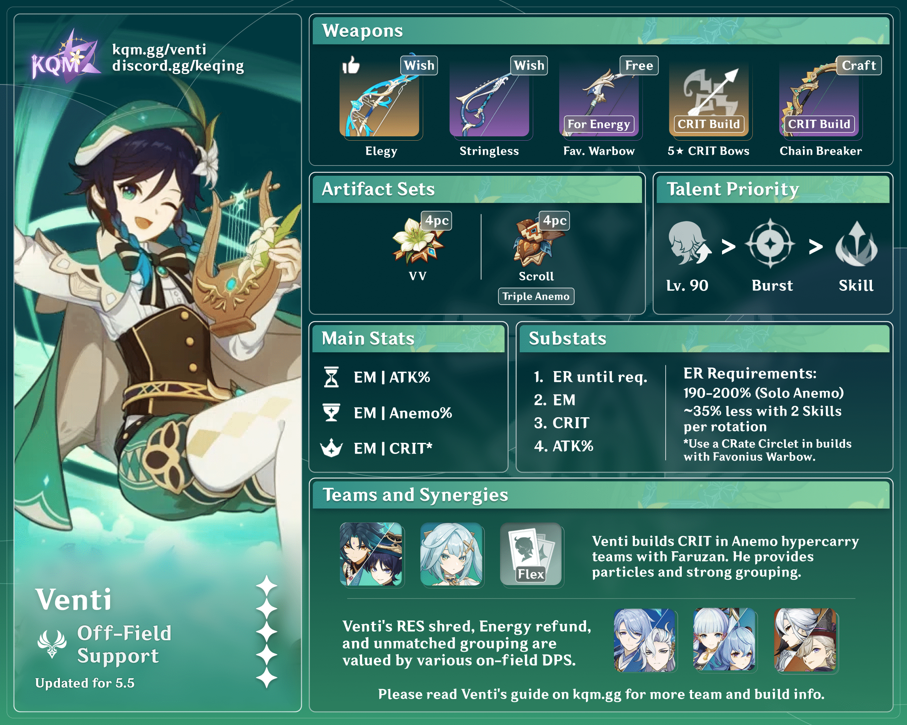

Venti
Element: Anemo
Weapon: Bow
Role: Support
Venti is a playable Anemo character in Genshin Impact. He is a free-spirited, wine-loving bard of Mondstadt, belying his identity as Barbatos, the Anemo Archon.
Around 2,600 years ago, the Archon War had yet to end, and the world had yet to fall under the dominion of The Seven. In those days, the city called "Mondstadt" was surrounded on all sides by gales impenetrable even to the birds of the air. The wind's ceaseless howling ground the soil and the rock of that city into smooth, flowing dust. The Lord of Wind who lived in his high tower was Decarabian, God of Storms. He squinted from on high at his subjects, who bowed before him in the unceasing wind, and, believing them submissive, thought this good. In those days, Venti was but a single thread of the thousand winds that roared through the northern lands. He who would in latter days be known as "Barbatos" was but a tiny elemental spirit, without a shred of divine dignity, a breeze that brought subtle changes for the better, or tiny seeds of hope. In Mondstadt of old, Venti met a young boy. This lad knew how to play the lyre, and longed to write the greatest poem of all. "I do so wish to see the birds in flight." So said the boy who had never seen the blue sky, eagles, or the green grass, his voice almost utterly drowned by the wind. "Friend, will you not come along?" The elemental being Venti obtained the feather of an eagle for the lad living in that storm-shrouded city, who had never seen a bird in his life. Then, war broke out in Mondstadt, in the name of freedom. With the feather tucked away in his breast pocket, Venti watched the fall of the eccentric ruler amid the wrack and ruin of revolt together with his friend. The ruler had believed that he had given his subjects a city free from the bitter cold, and to the end, he believed that they had loved him as he loved them. Yet, despite the victory, Venti was never able to give that feather to the lad, for that lad had fallen in the battle for the sake of song, sky, and birds, and for the people who, like him, had dwelled within the storm-wall. With the crumbling of an ancient seat of divinity, a new god was born. The Anemo Archon Barbatos felt power flowing at his fingertips. His first use of this power was to reconstitute himself in the likeness of that young lad. For only if he wore human shape could he play the lyre that the lad so loved. Plucking its strings, he scattered the ice and snow and split the mountains with a divine wind. He bade Mondstadt become a city of freedom, a nation without a king. In future, he believed, it would become a better, more romantic city. "Surely, he too would have wanted to live in such a place." Thus, a new age began for Mondstadt.
